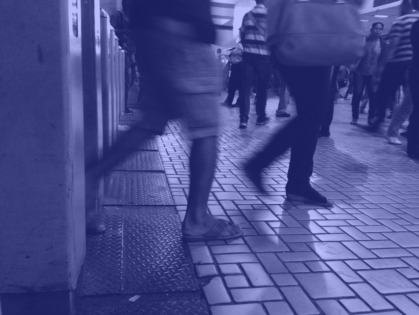

Lab Quilombola
O Lab Quilombola é uma iniciativa que reúne a complexidade cultural e identitária dos povos da diáspora africana com arte e as novas tecnologias. O projeto tem por objetivo o desenvolvimento de produções afro-centradas no universo da cultura digital e o posicionamento do povo negro no centro das visões de futuro, através de criações artística Ancestro Futuristas.
São Paulo , Brasil
July 2024
Ancestralidade
Cultura Digital
Art Generativa
Hacklab
Onde aprendo a falar com o vento
Onde aprendo a falar com o vento conta a história de um grupo de jovens de Oliveira, Minas Gerais, que fundou o Reinadinho, um festejo do Reinado protagonizado só por crianças e jovens.
Minas Gerais, Brasil
April 2024
Documentário
Educação Decolonial
Reinado
Mediação
FUNFIC
A ferramenta Web FUNFIC proporciona o encontro entre o universo Fanfic e Programação Criativa, da linguagem humana e de máquina, escrita literária e de códigos.
São Paulo, Brasil
February 2022
Compilador JS
FUNFIC
Programação Criativa
Educação
KULUNDA
Kulúnda é um mineral digital. Em sua estrutura estão sedimentados alguns dados, visuais e sonoros, que resgatam fragmentos de memória do processo de escravização do povo Bantu, durante o princípio da mineração no Brasil Colonial.
Minas Gerais, Brasil
March 2021
WEBGL
Vissungos
Ancestralidade
P5.JS
SEDIMENTATION
Este projeto concentra-se nas memórias do período colonial, quando o Brasil passou por uma extração mineral em larga escala realizada por pessoas negras e indígenas forçadas a trabalhar como escravizadas.
New York, EUA
January 2021
Processing
P5.JS
NFT
Congado
ESCAMA
O APP escama oferece uma experiência em realidade aumentada com os azulejos de Lisboa.
Lisboa , Portugal
June 2020
A-Frame
Azulejos
AR.JS
Vozes da Terra
Consiste em um artefato eletrônico sonoro que possibilita a escuta, amplificação e produção de memória na cultura indígena.
Aldeia Brejo dos Padres, Brasil
March 2019
Pankararu
Mediação
Tecnologia Indígena
Raspberry Pi
La logique du Fantasme
O Projeto comissionado pela DEVIR/CAPA(Portugal), realizou um mapeamento e mediação em campos de refugiados da cidade de Paris.
Paris, França
September 2018
Refugiados
Mediação
Vídeo 360
Fotografia
Crioula Reinado
CRIOULA REINADO é um documentário realizado através de um encontro precioso entre povos de matriz africana.
Maranhão - Minhas Gerais, Brasil
April 2017
Documentário
Direção de arte
Mediação
Volume
Volume aborda conceitos e metodologias de Arte Sonora e Hibridismo entre natureza e tecnologia para criar procedimentos de escuta, amplificação, interação, sonificação e mobilização de afeto com corpos hídricos.
Rio de Janeiro e Cuiabá, Brasil
October 2015
Sonificação
Arduino
MAX/MSP
Touch Designer

Concreto Comum
Comum Concreto – Dispositivo Portátil de Trabalho e Moradia propõe uma solução critica para um problema real social urbano. Equipa x vendedorx andarilhx que vive nas ruas com uma banca de vendas (módulo de trabalho) e um abrigo (módulo de moradia e lazer) a partir de dois volumes (carrinho e mochila) portáteis e reversíveis.
Rio de Janeiro, Brasil
April 2015
Instalação
Mobiliário Urbano
Mediação
Desobediência Urbana
QUANTA
Projeto comissionado pelo Oi Futuro, Quanta trata-se de uma instalação sonora interativa montada em catracas da estação Central do Brasil.
Rio de Janeiro, Brasil
January 2014
TensorFlow
Puredata
Sensor PIR

SIMBINOISE
A instalação consiste em uma tradicional barraca de feira repleta de frutas ligadas a circuitos eletrônicos gerando interações sonoras. Projeto exposto pelo SESC, Circo Voador e Canal Futura.
Rio de Janeiro, Brasil
January 2013
Circuit Bending
Arduino
Eletroacústica
Interação
Banco de dados
Instalação Sonora em 8 Canais, torna audíveis leituras da cidade por meio da voz e da vivência de pessoas em situação de rua no Rio de Janeiro.
Rio de Janeiro
October 2012
Instalação Sonora
Mediação
UOCO
Coletivo de experimentação eletroacústica e visual, Uoco publicou zines com conteúdo visual e sonoro, explorando a produção de texturas sonoras e visuais. No desenvolvimento do conteúdo da revista, os idealizadores decidiram definir uma obra literária como eixo central e criar “trilhas” e releituras em diversos formatos e suportes artísticos.
Rio de Janeiro, Brasil
December 2010
Eletroacústica
Revista
Noise
Experimentação Sonora
Trilha de Sumé
Projeto de intervenção urbana realizado em 6 países da América latina, usa referências de arte pré colombiana, máscaras e grafismos africanos.
May 2010
Arte Urbana
Afrocentricidade
Escultura